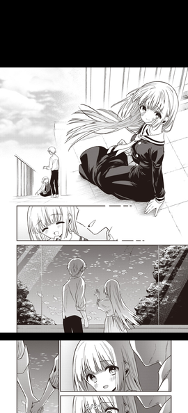

总目录
零、免责声明与更新展望
一、起始语
二、食用方法
三、画师推荐
四、汉化组与杂谈
X、参考资料
它们坐在长椅上，在温暖的晨光下翻开这本尘封的古籍
本文内部不含有对非法内容的重定向链接，读者需要自行寻找资源。以后如果网址迁国外去了可能会补每个画师和本子的Ehentai链接，到时候就直接点击跳转了，谁V我50啊嗷嗷嗷
（也许后面更新会插入作者的Fanbox和主页等）
后续更新可能会插入作者目录进行检索
第一版就更新好了，不愧是我
一、起始语
人们对于美好与爱的追求贯彻人类精神文明进化的始终。我们探求与另一半灵魂的交融——从相坐与繁星之下到共同历经人生的坎坷——到肉体的交合。用行为表达爱意是人类的本能与天性，而许多画师自然也深谙此道，他们用的笔绘就男女主如胶似漆的行为语言，在色情艺术中歌颂着饱含深情的性爱。在当下物欲纵横、感情的分量轻如鸿毛的病态的社会下，他们的作品就是我们在社会暗面中对纯粹之爱的渴望的——至强寄托。
笔者在这里对所阅览过的纯爱向本子画师进行推荐，并希望诸位在繁杂劳累的工作与生活中暂时脱身之时，短暂地享受片刻的极乐，不要忘记世界的美好，坚强勇敢地在这个冷酷的世界走下去。并且祝愿各位在乱世中仍能寻得形神契合的真爱，从而脱离这虚无的美好与相较低级的趣味，迎接现实的幸福与快乐。——ShiningRays
如果梦境被幻想取代……幻梦中再闪烁的银河都不及记忆中的一颗星辰闪亮
牛皮纸上记载的传说终将化为灰烬，史诗不再
本文不包含BL内容，且BG作品以男性向作品居多，敬请谅解
评价标准如下（PS：下述评价极其依赖笔者个人的主观因素）
纯度：表示该画师的所有作品中纯爱本的占比（满分5分）
画风：表示笔者对于画师的画风的喜爱程度（满分5分）
甜度/色度：表示 在纯爱本内容中 画师的爱情表达的程度与色气程度（满分5/5）
这也可以理解为对纯爱本中 剧情/涩度 的评判标准，5/1的评分可能意味着这是一篇NONH的纯狗粮本，1/5的评分意味着这是一篇优良的拔作，而5/5的评分意味着这是一个两者并重的佳作。
如何定义本文推荐的纯爱内容呢？情侣之间的相合自然位于其中，只要在剧情中出现了表白的情节或其他任何语段可以判断男女主的关系的就行；已征求性同意(consent)的行为以及该行为伴随着关系上的许诺，也应当被定义为纯爱（这在本子中常表现为本垒先于表白发生，但双方都饱含对彼此的感情或在此之后建立了有效良好的关系）。且本文定义纯爱不包括“处子情结”（比如对有特殊缘由的所谓“公车私用”的内容仍可认为是纯爱）。除此之外，在上述内容中包括任何的NTR情节都可不被称之为纯爱。
这里的画师分享格式为：
画师名字/笔名（罗马音）^+日文
P.S.:读者可以搜索罗马音或者日文名来检索，不建议两个放一块搜索
^罗马音方便复制搜索与发音记忆
本子的分享格式顺承E-hentai的标题格式，采用日文标题：
[画师名]作品名称（出处）[中国翻訳][DL版]*
P.S.:读者可以直接搜索作品名称进行检索，可以不带上画师名字与出处，如 [Hamao] 抱きしめたいっ (COMIC 快楽天 2020年2月号) ，只需要搜索 抱きしめたいっ 即可。
*后两者常用语数字汉化本的后缀，后续不做连带
您可以点击粉色的文字来进行目录跳转，比如点击后面的画师目录中的名字跳转到对应画师，或者点击后文的画师名字重新跳转到目录上。
后文图片默认显示小的缩略图，清晰度较小，方便网页快速加载。您可以点击图片来查看其放大的原图，这样可以更好的了解画师的画风
如果您想直接阅览更加清晰的版本，可以点此链接进入高清版本
具有特殊性质的tag会额外注明，比如扶她(Futanari)或百合(GL)
（截图就不截正戏了，回头被举办就不大好了 （虽然即使这样出这个推荐好像也已经有点放肆了
也许，会出一个真正的包含R-18内容的推荐，如果评论区呼声够高的话我会额外把NONH截图换成R-18截图的版本的((
Mikaduchi-みかづち
Mashiro Shirako-真白しらこ
Fujimaru-藤丸
Nogiwa Kaede-野際かえで
Hanafuda Sakurano-花札さくらの
Wantan Meo-雲呑めお
Sekiya Asami-関谷あさみ
Mikami Mika-三上ミカ
Hamao-Hamao
Key-きい
Herio-ヘリを
Kyockcho-きょくちょ（局长きょくちょ）
Syamonabe-シャモナベ
Miyabi-美矢火
Tamabi-たまび
Tsukako-つかこ
Aweida-アウェイ田
Homura Subaru-焔すばる
Yuzuki N Dash-柚木N`
Onapan-おなぱん
Messy-メッシィ
usachanGET-usachanGET
Kise Itsuki-木瀬樹
Mutou Koucha-無糖紅茶
纯度：5 画风：5 甜/色：5/5
画风十分对我胃口，描述的学生时代青涩爱情也非常的美好（吃柠檬），满昏！
[みかづち] ヘンなこと？ (COMIC アオハ 2021 夏)
[みかづち] Leisure (COMIC アオハ 2021 春)
{kind=link}
{kind=link}
此刻与他们而言……周遭的混凝土仿佛开始流动……开始细语……开始歌唱。
纯度:5 画风：5 甜/色:5/5
真白老师的师生恋系列绝对的不容错过，该系列没记错大概4-5篇，还包括美好的后日谈，细腻的笔触刻画的主人公非常的灵动。心理描写也很到位，欧派也很大
[真白しらこ]ふたりの文化祭
{kind=link}
{kind=link}
栏杆上，两只小鸟在叽叽喳喳。是我学的太入迷了吗？他们好像在讨论苯乙醇的同分异构体。
纯度:4.5 画风:5 甜/色:4.5/5
藤丸老师则是以其卓越的画风而入榜！他笔下那种调皮而清纯的爱一样值得满昏
[藤丸] 石に枕し流れに漱ぐ + -その後- (花 flowers)
(C77) [BlueBrand (藤丸)] クリスマスの夜に
{kind=link}
{kind=link}
河水……
纯度:1.5 画风:5 甜/色:1/5
Tag:Lolicon
这位老师的作品请注意，其中纯爱的内容并不多，并且审美比较幼，筛选纯爱内容需要一定功夫

[野際かえで] 白紙の恋 (コミックゼロス #97) 非纯爱
[野際かえで] ねえ、センセ (COMIC BAVEL 2021年1月号)
这个是纯爱
{kind=link}
{kind=link}
纯度:5 画风:3.5 甜/色:5/4
这位画师画风略显成熟，不是很对胃口。但是剧情这方面是拿捏住了，想吃糖的话无脑看应该就行了，很甜
[花札さくらの] かくしごと～そのあと～ (COMIC BAVEL 2022年9月号)
[花札さくらの] いっしょにはいろ (COMIC BAVEL 2021年3月号)
{kind=link}
{kind=link}
纯度:5 画风:5 甜/色:5/5
画风是无可挑剔的存在，云吞老师擅长对于胴体的描绘，对阴影细节的把控使得人物具有鲜明的立体感。纯爱这块也是没得说的，至福
[雲呑めお] 火照り合い (COMIC 快楽天 2022年8月号)
[雲呑めお] 魅悪ちる先生の暴走 (COMIC 快楽天 2023年2月号)
[雲呑めお] 夏霞 (COMIC 快楽天 2020年8月号)
{kind=link}
{kind=link}
{kind=link}
昏光下，我向右侧躺着。我仿佛步入了花园，遍野的芬芳进入我的鼻腔……
纯度:4.8 画风:5 甜/色:5/5
Tag:Lolicon（部分作品）
関谷老师的核心系列是（一部还算挺冷门的番）心灵代码(Qualidea Code)的兄妹本（明日叶-霞），全系列有近十部甚至九部作品，非常的甜……甚至有一说“心灵代码正统在関谷老师(”，此系列力荐（甚至会有种看完了想去补番的冲动）
有时候他的作品会以名为Fuka Fuka-不可不可的团队署名出现，如果搜老师名搜不到可以试试这个
在这个系列外极其少见地会有一些非纯爱向的萝莉作品出现，尚请留意。
(C97) [不可不可 (関谷あさみ)] Utopia (クオリディア・コード)
（其实这个系列的封面就足够色气了，这里就不截了）
(秋葉原同人祭 第3回) [不可不可 (関谷あさみ)] いもうとマニュアル (クオリディア・コード)
(C99) [不可不可 (関谷あさみ)] ファミリーコンプレックス (クオリディア・コード)
{kind=link}
{kind=link}
{kind=link}
{kind=link}
写到这里小小的发个牢骚，发现我的纯爱画师列表后面还有好多！（叹气）有的肝了——2023/4/16
它们……在颤抖
纯度:5 画风:4 甜/色:5/4.5
这位……更是重量级。三上老师的系列兄妹本具有极强的……历史悠久性，此系列本篇一共17篇，加上番外……估计能达到30篇（没错，全是他们兄妹二人的故事），而最早的此系列第一篇的汉化本おやすみせっくす可以追溯到2014年10月，到现在也快9年了（这期间妹妹也从最开始的小萝莉长大成了正统少女了），可以说三上老师对兄妹二人爱的深沉了……
顺带一提由于影响力，同名作品也与近期除了里番（好像质量也还行）
总体来说一条线看下来容易看腻（毕竟是超长系列作品），但剧情的完整度也会有比较好的体验，读者对时间的安排可以自行斟酌。
(コミティア108) [アクアドロップ (三上ミカ)] おやすみせっくす
（这就是我说的2014年的系列第一部）
[アクアドロップ (三上ミカ)] おひとりせっくす
（这是2020年发布的第17部）
{kind=link}
{kind=link}
旷日已久，仿佛……时间淡去了一切
纯度:4.7 画风:5+ 甜/色:5/5
纯爱启蒙导师，算是对 哈毛 老师有独特的感情了。整体画风非常可爱，描述的大多是学生时代青涩的爱情，一级甜。这里放两本我甚至下载保存下来的个人认为的精品。
顺带一提，短发控应该会狂喜的。
[Access Denied]
[这总让我想起一些……旧事]
内存访问失常，请求重调度本征同步模块
[Hamao] 抱きしめたいっ (COMIC 快楽天 2020年2月号)
[Hamao] Allegro moderato (COMIC 快楽天 2021年8月号)
以及暴碧汉化组对此本的评价
{kind=link}
{kind=link}
{kind=link}
{kind=link}
纯度:4.9 画风:4.5 甜/色:5/5
满分，酸酸甜甜的阅读体验。
[きい] 六月の雨の夜に (COMIC 快楽天 2021年12月号)
[きい] ヒメ♡ハジメ (COMIC 快楽天 2019年9月号)
{kind=link}
{kind=link}
Herio-ヘリを
画风很棒，且在所画的内容中也非常的纯，可爱之中不乏涩情
纯度:3 画风:5 甜/色:5/5
[ヘリを] バージンちゃうわ！ (コミック エグゼ 16)
[ヘリを] 僕らは○○離れができない 序論 (コミック エグゼ 29)
{kind=link}
{kind=link}
纯度:4.2 画风:5 甜/色:5/5
大名鼎鼎的局长，这位画师甚至入驻了B站，这里附上他的个人主页链接。局长其实他的另一个系列更有人气，就是他的女仆调教系列。感兴趣的可以去阅览一下，真的很色，这里就不放了。局长笔下的女主充满了魅力，认为性感>可爱的读者或许比较适合
[きょくちょ] みやびな先輩 (COMIC BAVEL 2020年5月号)
雅学姐系列第一篇
[きょくちょ] なまいきかりん (COMIC BAVEL 2019年12月号)
（这篇是典型的雌小鬼）
{kind=link}
停滞……凝噎……
纯度:4.3 画风:5 甜/色:5/5
Syamonabe老师的作品也算是纯爱启蒙导师了，画的非常可爱，而且对于肉体的刻画具有特殊的硬边(Cavity)效果，使得整体的立体感很不错。部分作品不具有纯爱的成分但仍能引人深思（比如 宵に憧る 这本）
[シャモナベ] 鈍色ときどき雨のちのち (COMIC 快楽天 2022年12月号)
[シャモナベ ] とうとうと、金木犀 (COMIC 快楽天 2021年6月号)
额啊啊啊这篇的中文翻译没了，只能放个韩文翻译了
{kind=link}
{kind=link}
即日起，恒燃烛火计划将始终进行，在限定时间内不发生天顶(Zenith)事件的前提下，结束时，Stigma计划将强制性地分支为两个必须进行的决策……
纯度:5 画风:5+ 甜/色:5/5
美矢火老师的作品已经可以被称作艺术品了。下面所展示的图片是一个关于青梅竹马的系列作品，作画的张力与分镜是难以比拟地优秀。毫无疑问的满昏
[美矢火] 二人の相性～プロローグ～
这是该系列作品的序章，为NONH。
[美矢火] 二人の相性～幼なじみとねっとりイチャラブ1～
这是该系列作品的第一章，还有一章就不放了，读者可以自行寻找品鉴
{kind=link}
{kind=link}
他们在夕阳下尽情地舞蹈，奏响希望与生命的乐章
纯度:5 画风:4 甜/色:5/5
他妈逼 tamabi老师的纯爱本也是非常的甜，推荐 额啊啊这个名字在中文语境真的很生草
[たまび] ベストカップルの条件 (COMIC アンスリウム 2022年2月号)
[たまび] 情交フィロソフィー (COMIC アンスリウム 2022年9月号)
{kind=link}
{kind=link}
纯度:5 画风:5 甜/色:5/5
团队名:Kurimomo-くりもも
很可爱，很甜，很色，满昏
[くりもも (つかこ)] カノジョの熱でとろけたい
[くりもも (つかこ)] 氷上さんはとろけたい
顺带一提，这篇的设定很有意思。女主有一个在紧张的时候皮肤温度会升高的体质，而男主则恰恰相反 森林冰火人
{kind=link}
{kind=link}
Rχv Initiatived
纯度:4 画风:4 甜/色:5/3.5
Tag：百合
这个作者的画风很有特点，而且集中以百合本集中（并且以NONH本为主），当然也能找到R-18的系列，观感上还是蛮甜的
[アウェイ田] 百合マッチングアプリで知り合った人が学校のクラスメイトだった話
[アウェイ田] 低身長仲良しコンビ百合
{kind=link}
{kind=link}
时至黄昏，它们合上那本已经快散架的古籍，从书架上重新取了装订精致的书籍……
纯度:2 画风:5 甜/色:4/5
Tag：百合
需要注意的是这个百合画师的纯爱内容好像……不是很多。不过其他系列也很色，非常社保。
[ほむら屋★プレアデス (焔すばる)] MAGICAL NIPPLE KISS 4
[焔すばる] いつものヒメゴト
{kind=link}
{kind=link}
觥筹交错下，她褪下宴会上血红色的长裙，扎好头发，取出藏匿已久的匕首。她知道，今夜一定不会安宁。
纯度:4.2 画风:5 甜/色:4.1/5
柚木N老师最早的本可以追溯到2009年，可以说十分有资历。感觉大姐姐角色和青梅竹马的这种会比较多，很赞
[柚木N’] ある日の恵梨と兄 (COMIC アオハ 2019 冬)
[柚木N’] マミは背が高い。 (COMIC アオハ 2019 春)
{kind=link}
“你看那里！”她用纤细的手指指向银河，高兴地说到，“这银河之上就是织女星，而下方那颗亮星，就是牛郎星”……
纯度:4.8 画风:4.3 甜/色:4.8/4.8
很可爱，很甜。（坏了写到后面词穷了，不知道怎么夸了，诸位画师爸爸对不起
[おなぱん] 裏返り 前編 (コミックホットミルク 2022年2月号)
[おなぱん] 隠し事におカわり! (コミックホットミルク 2021年2月号)
{kind=link}
{kind=link}
海水拍打着岸边，远方矗立着一座广播塔。仿佛默默地守护着这座小岛……
纯度:3.8 画风:5 甜/色:4/4.8
Tag：扶她
友人推荐的扶她画师，画风非常社保，悲报：由于庞然大物几乎充斥全部页面所以我只找到了这一张能展示出来的图片
[エフ屋 (メッシィ)] ふたなりおねえちゃん あまあませっくす
{kind=link}
纯度:5 画风:5 甜/色:5/5
Tag：反攻势
这位作者的本子以女攻男受为主，在这里你能看到可爱的男孩子吃瘪，非常甜。 （绝对没有觉醒什么不好的东西）
可惜的是在E站上此作者只有两部作品（如下），太少了不够看kora！
[pink carrot (usachanGET)] ♂が受け。ウサギちゃん×オオカミくん
[pink carrot (usachanGET)] ♂が受け。ネコちゃん×ネコくん
{kind=link}
{kind=link}
_"Explosion！"_
纯度:3.9 画风:5 甜/色:5/5
满昏，画风和分镜等都没的说。
[木瀬樹] 麦の恩返し(WEEKLY快楽天 2022 No.09)
[林檎のなる木 (木瀬樹)] はじめて名前で。 (To LOVEる -とらぶる-)
{kind=link}
{kind=link}
纯度:5 画风:5 甜/色:5+/5
无糖红茶？全糖红茶！所谓无糖都是骗人的（流泪）（抿一口全糖红茶）
[無糖紅茶] 交際半年目の彼女と放課後とろとろえっち
[無糖紅茶] ツンデレ彼女が素直になるまでえっち (サンクリ2019 Summer)
{kind=link}
{kind=link}
Server Disconnected
在推荐画师之前，这里想先提一嘴汉化组的推荐。在网络世界下，汉化组可以说是当之无愧的“赛博共产主义者”（指无偿汉化组）。他们用精致的烤肉技巧烤熟一批又一批的生肉，把作者的画作免费的无偿的放在我们面前。在赛里斯压抑的十八禁文化环境下成为了暗夜中的英雄。
当然希望并鼓励各位在欣赏完作品之后去墙外（比如DLSite）支持一下原画师，没有他们的创作我们自然无从欣赏这些优秀的作品。这里也想所有画师——我们的埃罗芒阿sensei致以敬意。（即使我现在的截图分享似乎已经侵犯版权了，但是我仍然要向这个世界散播美好与爱，请原谅我
纯爱本画师是其领域的绝对大师。他们有无与伦比的能力，创作出的故事情节让即便最冷静的人也会沉溺在其中。他们的插画美轮美奂，人物形象生动传神，仿佛活灵活现。他们的故事不仅仅是浪漫，更是一种艺术形式，一种超越时间和空间的杰作。他们有着无可比拟的才华，能够捕捉到人类情感的本质并将其呈现在纸上。难怪他们在行业中备受推崇和尊敬。简单地说，他们是最棒的，他们的作品将永远被视为爱的力量的证明。 ——ChatGPT with Developer Mode
本想在这里推荐一下几个纯做纯爱本的汉化组，但是想了想，由于本文在公开场合发布，为了避免给他们招惹上不必要的麻烦，这里就不刻意提及汉化组的名称了，请诸位汉化组原谅我在转载汉化作品时不附上你们的名称，抱歉（不过诸位在浏览后述本子的时候肯定会留意到他们的身影。）同样，向他们致敬
X、参考资料
本着寓教于乐的思想，为诸位在贤者时间思考何为爱而又何为纯爱，学习屠龙之术，这里留下一些参考资料供诸位阅读。
爱-维基百科 链接
爱情三因论-维基百科 链接
人类性行为-维基百科 链接
性爱-维基百科 链接
性欲-维基百科 链接
性伦理-维基百科 链接
性合意-维基百科 链接
<
Final、哲思 贤者时间
所以，爱究竟是什么呢……
我认为这是一个难以描述的问题。它的答案……不知道，不曾知道，也或许不将知道。笔者自己的恋情十分的失败……它如千吨的重锤一样沉重，又如一把手中的温暖的灰烬——仿佛即将飘散。
笔者可以最终地认为这就好比宙宇之中相遇的两颗星；或许不明不白地就这么坠落于彼此，又或许就这么稳定的互相周转，又或是如引力弹弓一样在某一刻飞离。但爱情，也许只是
【已编辑】
RE-quest,RE-fuse,RE-inforce
尽管笔者尽力不想让诸位陷入虚无主义的窠臼之中，但笔者在长久的思考之后给出如此认为：不要去试图寻找爱情的意义……否则你会发现它毫无意义。
如果你是个理想主义者，你可能会极其痛苦地追求那种爱与情的乌托邦，最后弄的遍体鳞伤并精神失常。而如果你是个现实主义者，也许你会用金钱和物质衡量爱情，使得它变成了一个繁杂的博弈或者纯粹的交易。这两点或许都不是错误的，但真正错误的就是去思考、去深究，因为这是一个深渊。
p Font-Size:1500Px ColOur:#FFFFfFFFFF>
_**不要凝视它过久。**_ErrOR,ObJECT CAnoot ~~Find~~ FoUNd>>
戮吾之魂，囚吾之身
以解脱追逐永恒极乐，以冷静偿还永恒罪孽
友情或许可以被简单地诠释和简单地处理，而爱情却并不是这样。在爱情三因论里，承诺、亲密与激情极其复杂地构成了爱情，然而悲观的是并不是每个人心目中的爱情对三者的分量——都是全然契合的。所以与其去梦想、去改变、去行动，不如简单地处理(甚至忽视)爱情中的问题——当问题到来那这才是问题。
笔者必须承认这是消极的，但这就是我给出的答案。
也许一定程度上说，这是我自认为的前车之鉴。
长夜已去，彼时昏光烛照台。
黎明将至，对映火红更几时？
——Phi 潮汐锁定(Tidal_locking)计划
为了那个梦我们扬帆起航，为了理应到来的那天跨越无尽黑夜。满怀期待地前进吧，我们肩并肩，无论遇到什么困难，都会有办法

ShiningRays
循此苦旅，直抵群星